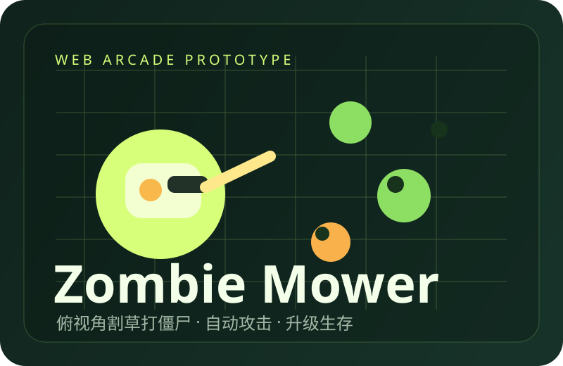

博客上线记录
先把 GitHub Pages 跑通，再逐步换掉临时结构，把这个地方真的变成个人网站。
Desktop welcome
首次进入先看到桌面。五个入口像桌面快捷方式一样摆在上面，点击再弹出大窗口查看内容。
Home
我喜欢把还没成型的东西先搭出一个能操作的外壳，再一点点把内容塞进去。这个网站会继续长成我的个人控制台。
点左侧桌面图标，或底部 Dock，都可以打开对应内容窗口。窗口支持滚动，也会在点击时自动置顶。
先把个人网站做成一个更有叙事感的桌面，再慢慢补进文章、作品、游戏和更真实的个人信息。
补真实作品截图、文章详情页、更多可玩的小游戏，以及更像系统桌面的文件夹层级。
Games
BUFFERED / SURVIVAL / LINK 001
俯视角割草打草怪：自动攻击、刷怪围攻、经验升级，在不断扩张的数据战场中完成生存循环。
Articles2026.06.17
先把 GitHub Pages 跑通，再逐步换掉临时结构，把这个地方真的变成个人网站。
先把 GitHub Pages 跑通，再逐步换掉临时结构，把这个地方真的变成个人网站。
把需求、实现、反复修改和最后结果都写清楚，给下次少留一点黑盒。
把重复劳动交给工具之后，人应该把更多精力拿去做判断和取舍。
从想法、草稿、发布到复盘，尝试把创作也做成一个能迭代的流程。
Works#001
基于位置随机抽附近餐厅，解决“吃什么”这个每天都要出现一次的世纪问题。
基于位置随机抽附近餐厅，解决“吃什么”这个每天都要出现一次的世纪问题。
把主页做成一个能打开、能切换、能滚动的桌面，而不是静态名片。
尝试把一些重复任务交给 AI 和脚本，让整个流程更顺手也更稳定。
把选题、打分、预测、复盘拆成清晰步骤，做成能长期用下去的节奏。